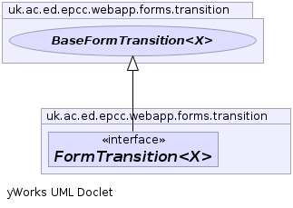

JavaScript is disabled on your browser.
Overview
Package
Class
Tree
Deprecated
Index
Help
Prev Class
Next Class
Frames
No Frames
All Classes
Summary:
Nested |
Field |
Constr |
Method
Detail:
Field |
Constr |
Method
uk.ac.ed.epcc.webapp.forms.transition
Interface FormTransition<X>
Type Parameters:
X
- type of object transition is on
All Superinterfaces:
BaseFormTransition
<X>,
Transition
<X>
All Known Subinterfaces:
ExtraFormTransition
<O>
All Known Implementing Classes:
AbstractFormTransition
,
AddBooleanFieldTransition
,
AddClassificationReferenceTransition
,
AddDateFieldTransition
,
AddDoubleFieldTransition
,
AddFieldTransition
,
AddFloatFieldTransition
,
AddIntegerFieldTransition
,
AddLongFieldTransition
,
AddReferenceTransition
,
AddTextFieldTransition
,
ConfirmTransition
,
DomTransitionProvider.EditNodeTransition
,
DomTransitionProvider.EditTransition
,
DropFieldTransition
,
DropForeignKeyTransition
,
DropIndexTransition
,
DynamicFormTransitionProvider.AddXMLTransition
,
DynamicFormTransitionProvider.CreateChildTransition
,
DynamicFormTransitionProvider.DuplicateTransition
,
EmailTransitionProvider.AddAttachmentTransition
,
EmailTransitionProvider.AddRecipientTransition
,
EmailTransitionProvider.EditSubjectTransition
,
EmailTransitionProvider.EditTextTransition
,
EmailTransitionProvider.FormContentMailTransition
,
EmailTransitionProvider.FormMailTransition
,
LogFactory.EditItemTransition
,
MoveDateTransition
,
PartPathTransitionProvider.AddXMLTransition
,
PartPathTransitionProvider.ConfigTransition
,
PartPathTransitionProvider.CreateChildTransition
,
PasswordUpdateFormBuilder
,
PreferenceTransitionProvider.SetFeatureTransition
,
PreferenceTransitionProvider.SetPreferenceTransition
,
ResponseTransitionProvider.EditSectionTransition
,
SplitTransition
,
TableSpecificationTransitionSource.AddStdFieldTransition
,
TableSpecificationTransitionSource.AddStdIndexTransition
,
TableSpecificationTransitionSource.DropOptionalFieldTransition
,
UpdateTransition
public interface
FormTransition<X>
extends
BaseFormTransition
<X>
A transition that requires a form to specify arguments
Author:
spb

Method Summary
Methods inherited from interface uk.ac.ed.epcc.webapp.forms.transition.
BaseFormTransition
buildForm
Methods inherited from interface uk.ac.ed.epcc.webapp.forms.transition.
Transition
getResult
Overview
Package
Class
Tree
Deprecated
Index
Help
Prev Class
Next Class
Frames
No Frames
All Classes
Summary:
Nested |
Field |
Constr |
Method
Detail:
Field |
Constr |
Method